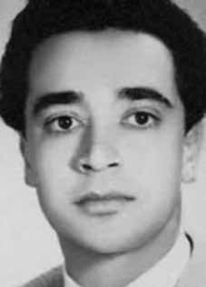

Luiz
Renato
Pires
de Almeida
CIRCUNSTÂNCIAS DA MORTE
Por meio do diário de Luiz Renato sabe-se que no dia 1o de setembro o brasileiro e Antero Callapiña Hurtado tentaram atravessar o rio Mapiri, na Bolívia, e se perderam do restante do grupo da ELN em meio às montanhas bolivianas. Permaneceram perdidos por quase um mês, sem acesso a alimentos – como consta no diário de Luiz Renato. iii Daniel Cassol, em sua pesquisa sobre Pires de Almeida, ouviu um camponês do povoado de Yaycurá que o relatou que no dia 26 de setembro de 1971 dois guerrilheiros estavam no povoado de Masapa, em “muito más condições”. Ao buscarem ajuda na região de Mapiri, ofereceram à barqueiros relógios e dinheiro para que os levassem a algum lugar não patrulhado pelos militares. iv Após o recebimento do pagamento, os barqueiros os largaram em Masapa, a 20 quilômetros do acampamento do camponês entrevistado por Daniel Cassol. Luiz Renato e Antero Hurtado foram presos e levados ao acampamento militar de Yaycurá no dia 2 de outubro. A transferência dos presos para o povoado de San Jorge era aguardada no dia seguinte. Porém, às onze horas e vinte e cinco minutos do dia 2 de setembro, segundo o camponês ouvido por Cassol, Antero tentou fugir e foi ferido por um militar. Luiz Renato, desesperado, pediu que não o matassem, sendo também ferido por um disparo. Feridos, foram executados pelos soldados bolivianos que os feriram.
Through Luiz Renato's diary it is known that on September 1st the Brazilian and Antero Callapiña Hurtado tried to cross the Mapiri River, in Bolivia, and got lost from the rest of the ELN group in the middle of the Bolivian mountains. They remained lost for almost a month, without access to food – as stated in Luiz Renato's diary. iii Daniel Cassol, in his research on Pires de Almeida, heard a peasant from the village of Yaycurá who told him that on September 26, 1971, two guerrillas were in the village of Masapa, in “very bad conditions”. When seeking help in the Mapiri region, they offered boatmen watches and money to take them somewhere not patrolled by the military. iv After receiving payment, the boatmen dropped them off in Masapa, 20 kilometers from the camp of the peasant interviewed by Daniel Cassol. Luiz Renato and Antero Hurtado were arrested and taken to the Yaycurá military camp on October 2nd. The transfer of prisoners to the town of San Jorge was expected the following day. However, at eleven twenty-five minutes on September 2nd, according to the peasant interviewed by Cassol, Antero tried to escape and was injured by a soldier. Luiz Renato, desperate, asked not to kill him, but was also injured by a gunshot. Wounded, they were executed by the Bolivian soldiers who injured them.
A través del diario de Luiz Renato se sabe que el 1 de septiembre el brasileño Antero Callapiña Hurtado intentó cruzar el río Mapiri, en Bolivia, y se perdió del resto del grupo del ELN en plena sierra boliviana. Permanecieron perdidos durante casi un mes, sin acceso a alimentos, como consta en el diario de Luiz Renato. iii Daniel Cassol, en su investigación sobre Pires de Almeida, escuchó a un campesino del pueblo de Yaycurá quien le contó que el 26 de septiembre de 1971, dos guerrilleros se encontraban en el pueblo de Masapa, en “muy malas condiciones”. Cuando buscaban ayuda en la región de Mapiri, ofrecían a los barqueros relojes y dinero para que los llevaran a algún lugar no patrullado por los militares. iv Luego de recibir el pago, los lancheros los dejaron en Masapa, a 20 kilómetros del campamento del campesino entrevistado por Daniel Cassol. Luiz Renato y Antero Hurtado fueron detenidos y trasladados al campamento militar de Yaycurá el 2 de octubre. Se esperaba el traslado de los presos al pueblo de San Jorge para el día siguiente. Sin embargo, a las once y veinticinco minutos del 2 de septiembre, según el campesino entrevistado por Cassol, Antero intentó escapar y fue herido por un soldado. Luiz Renato, desesperado, pidió no matarlo, pero también resultó herido de bala. Heridos, fueron ejecutados por los soldados bolivianos que los hirieron.